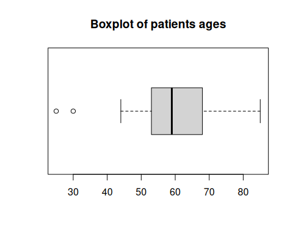
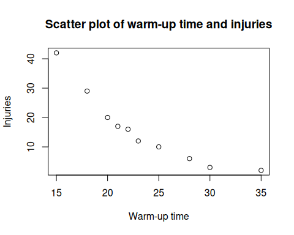

| 25 | 30 | 44 | 44 | 51 | 51 | 53 | 56 | 57 | 58 | 58 | 58 | 59 |
| 59 | 61 | 63 | 63 | 63 | 66 | 68 | 70 | 71 | 72 | 74 | 82 | 85 |
1 Descriptive Statistics and Regression exam (2018/05/31)
Exercise 1.1
The ages of a sample of patients of a physical therapy clinic are:
Compute the quartiles.
Draw the box plot and identify outliers (do not group data into intervals).
Split the sample into two groups, patients younger and older than 65. In which group is the mean more representative. Justify the answer.
Which distribution is less symmetric, the one of patients younger than 65 or the one of patients older?
Which age is relatively smaller with respect to its group, 50 years in the group of patients younger than 65 or 72 years in the group of patients older than 65?
Use the following sums for the computations.
Younger than 65: \(\sum x_i=953\) years, \(\sum x_i^2=52475\) years\(^2\), \(\sum (x_i-\bar x)^3=-30846.51\) years\(^3\) and \(\sum (x_i-\bar x)^4=939658.83\) years\(^4\).
Older than 65: \(\sum x_i=588\) years, \(\sum x_i^2=43530\) years\(^2\), \(\sum (x_i-\bar x)^3=1485\) years\(^3\) and \(\sum (x_i-\bar x)^4=26983.5\) years\(^4\).
Solution
- \(Q_1=53\) years, \(Q_2=59\) years and \(Q_3=68\) years.
- There are 2 outliers: 25, 30.

Let \(x\) be the age in patients younger than 65 and \(y\) the age in patients older than 65.
\(\bar x=52.9444\) years, \(s_x^2=112.1636\) years\(^2\), \(s_x=10.5907\) years and \(cv_x=0.2\).
\(\bar y=73.5\) years, \(s_y^2=39\) years\(^2\), \(s_y=6.245\) years and \(cv_y=0.085\).
The mean is more representative in patients older than 65 since the coefficient of variation is smaller.\(g_{1x}=-1.4426\) and \(g_{1y}=0.7621\), thus the distribution of ages of people younger than 65 is less symmetric.
The standard scores are \(z_x(50)=-0.278\) and \(z_y(72)=-0.2402\), thus 50 years is relative smaller in the group of people younger than 65.
Exercise 1.2
The table below shows the number of injuries of several teams during a league and the average warm-up time of its players.
| Warm-up time | 15 | 35 | 22 | 28 | 21 | 18 | 25 | 30 | 23 | 20 |
| Injuries | 42 | 2 | 16 | 6 | 17 | 29 | 10 | 3 | 12 | 20 |
Draw the scatter plot.
Which regression model is more suitable to predict the number of injuries as a function of the warm-up time, the logarithmic or the exponential? Use that regression model to predict the expected number of injuries for a team whose players warm-up 20 minutes a day.
Which regression model is more suitable to predict the warm-up time as a function of the number of injuries, the logarithmic or the exponential? Use that regression model to predict the warm-up time required to have no more than 10 injuries in a league.
Are these predictions reliable? Which one is more reliable?
Use the following sums for the computations (\(X\) warm-up time and \(Y\) number of injuries):
\(\sum x_i=237\), \(\sum \log(x_i)=31.3728\), \(\sum y_j=157\), \(\sum \log(y_j)=24.0775\),
\(\sum x_i^2=5937\), \(\sum \log(x_i)^2=98.9906\), \(\sum y_j^2=3843\), \(\sum \log(y_j)^2=66.3721\),
\(\sum x_iy_j=3115\), \(\sum x_i\log(y_j)=519.1907\), \(\sum \log(x_i)y_j=465.8093\), \(\sum \log(x_i)\log(y_j)=73.3995\).
Solution

\(\bar x=23.7\) min, \(s_x^2=32.01\) min\(^2\).
\(\overline{\log(x)}=3.1373\) log(min), \(s_{\log(x)}^2=0.0565\) log(min)\(^2\).
\(\bar y=15.7\) injuries, \(s_y^2=137.81\) injuries\(^2\).
\(\overline{\log(y)}=2.4078\) log(injuries), \(s_{\log(y)}^2=0.8399\) log(injuries)\(^2\).
\(s_{x\log(y)}=-5.1446\), \(s_{\log(x)y}=-2.6744\)
Exponential determination coefficient: \(r^2=0.9844\)
Logarithmic determination coefficient: \(r^2=0.9185\)
So the exponential regression model es better to predict the number of injuries as a function of the warm-up time.
Exponential regression model: \(y=e^{6.2168+-0.1607x}\).
Prediction: \(y(20)=20.1341\) injuries.The logarithmic model is better to predict the warm-up time as a function of the number or injuries.
Logarithmic regression model: \(x=164.1851+-47.3292\log(y)\).
Prediction: \(x(10)=55.2056112\) min.Both predictions are very reliable since de deternation coefficient is very high but the last one is a little less reliable as it is for a value further from the data range.